| 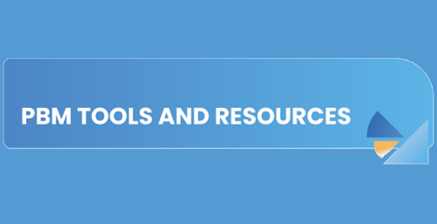 |
|---|
| We will be sharing some of the new paradigms employees have adopted as we've changed how we present PBM content and made new resources available. 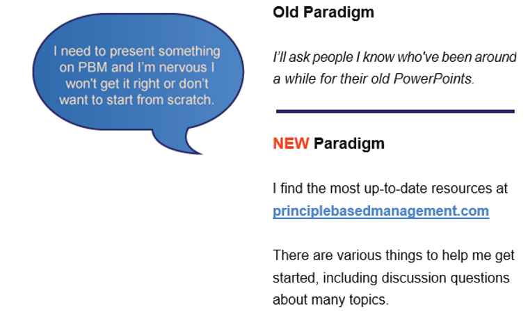 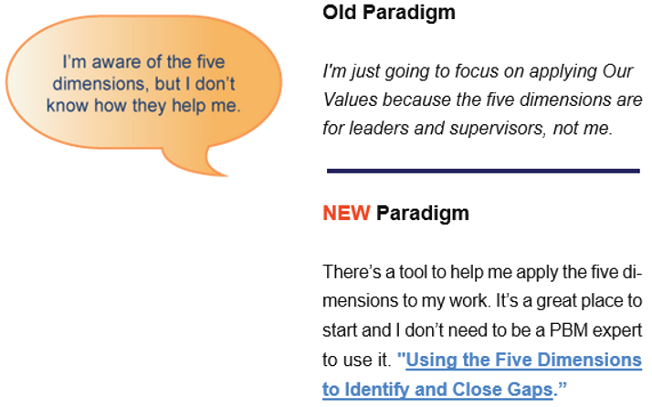 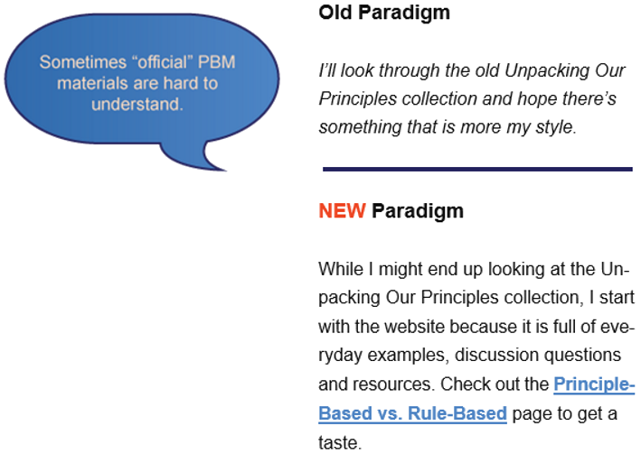 Ideas for Action: 1) Use some of the resources highlighted in the "new paradigm" sections. 2) Consider recommending one or two to a coworker. Resources: Principle Based Management PBM is a framework based on the principles of human progress that enables individuals and organizations to succeed long term by creating superior value for others. Live Events: Learning with Others Our employees can participate in live, online sessions with other employees and PBM facilitators. Five Dimensions What are the Five Dimensions? Together, the five dimensions provide a framework for applying principles of human progress to enable everyone to improve their own condition by helping others improve theirs. A dimension organizes principles of human progress to make them more effective in improving essential aspects of individual and organizational success. Because the five dimensions are interrelated and mutually reinforcing, they are most effective when applied holistically. Using the Five Dimensions to Identify and Close Gaps in Your Work At organization we continually seek to close the gap between what we are accomplishing and what we could be accomplishing if we were fully applying our principle-based framework. To identify ways to increase your contribution, ask yourself, your supervisor or others the following questions: 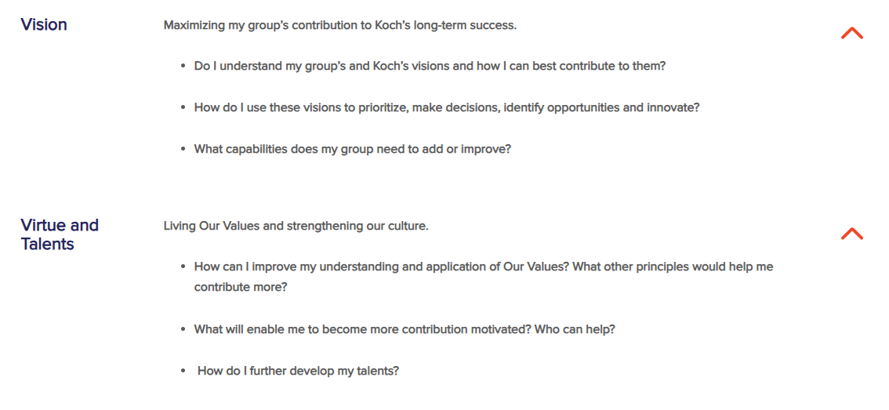 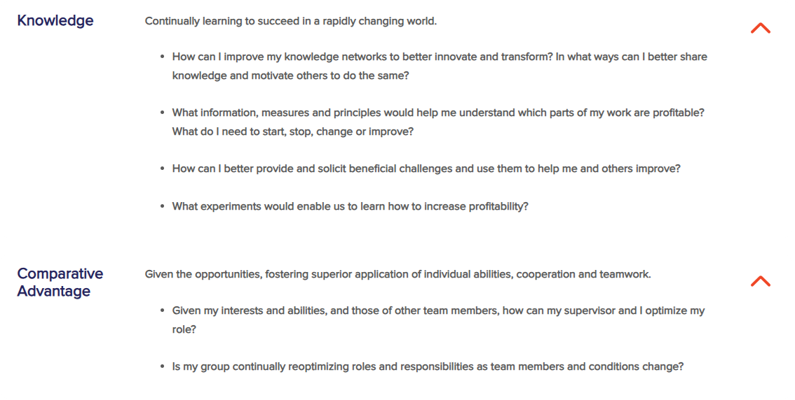 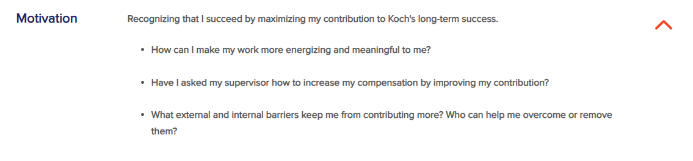 Brad Razook, Executive VP, organization Industries: "When your group isn’t functioning as well as it could, you’ve got to figure out what’s missing. What are we missing in those five dimensions?" Examples: Applying the Five Dimensions Below are examples of employees applying the five dimensions in different situations. Connecting to Vision: Ayla discusses the Vision questions in the “Using the Five Dimensions to Identify and Close Gaps” tool with her supervisor and teammates. As a result, she has a better understanding of what her team is trying to accomplish. Ayla finds she has better ideas for improving team processes and what skills she wants to sharpen since the discussion. Improving Team Effectiveness: Martin’s team has been doing okay, but he believes they can do more. He works with his supervisor to talk through the five dimensions, using “Supervisor Responsibilities and Expectations” as a guide. They decide the Comparative Advantage Dimension is where Martin needs to focus first. Martin begins by talking with each team member about their responsibilities and expectations and exploring new ways to organize the group’s work. Starting Something New: A new project team decides to be disciplined about using the five dimensions from the onset of their project. While this was a new approach to some team members, at the end of the project they all agreed that proactively using the five dimensions led to better results. Solving a Problem: Several customers have complained about late deliveries. Maurice can see from the data that the number and length of delays have increased over the last quarter. Maurice brings together a small group and uses the five dimensions to explore the problem and identify gaps that need closed. Principle-Based vs Rule-Based What Is Principle-Based vs. Rule-Based? At organization, our principles guide everything, including visions, strategies, policies, practices, partnerships, investments and performance evaluations. These principles encourage entrepreneurship, discovery and transformation. A principle-based approach is not an absence of rules. But when policies, processes or procedures are necessary, they must be judged against general principles. We expect them to be continually challenged and improved – or eliminated when they undermine progress. What Is a Principle? A principle is fundamental or general truth that guides our thinking, behavior and actions to enable all people, and thereby societies, to flourish. Principles apply universally, whereas detailed rules and methods only work in specific applications. What Principles Do We Use in Principle Based Management? There are dozens of principles – what we call principles of human progress – in PBM. These principles come from many sources and have been proven over time to promote peace, civility, opportunity and fulfillment. Why Is This Important? A principle-based approach frees everyone to think and innovate – to develop different methods and solutions – rather than mindlessly follow instructions. It creates an environment where every employee knows what to do to maximize value creation and is motivated to do it without being told. Applying principles requires employees to be collaborative and use their judgment. Principle in Brief: Principle-Based vs Rule-Based For decades, organization has emphasized the importance of understanding and applying principles of human progress. Nobel laureate F.A. Hayek concluded that uncovering these principles was “perhaps the greatest discovery mankind ever made.” When practiced correctly, they promote peace, civility, mutual benefit, opportunity, success and enable people to live a life of meaning. Before this discovery, rulers throughout human history enforced a top-down and arbitrary rule-based system of control that made the human experience miserable. Nearly everyone was born in poverty, lived in poverty and died in poverty. The average life expectancy hovered between 30 and 40 years. It was only when principles of human progress began to be applied around 1800 that people’s lives dramatically improved. As millions of people gained the opportunity to more fully live as they saw fit, they began applying their abilities and knowledge to improve their lives by helping others improve theirs. While there will always be room for improvement, most people are healthier, wealthier and happier than ever before. The application of these principles in societies has greatly improved well-being, but there has not been a similar transformation in organizational management. Whether intentional or not, leaders who use prescribed, detailed rules and directives behave as though they don’t need to motivate their employees or benefit from their knowledge and ideas. Those who think they have all the answers push only their own ideas and require standardization because they assume most people don’t have much to offer. At organization, principles of human progress guide everything including visions, strategies, policies, practices, partnerships, investments and performance evaluations. These principles encourage entrepreneurship, discovery and transformation. They apply universally, whereas detailed rules and methods only work in specific applications under certain conditions, and even then tend to stifle motivation and creativity. A principle-based approach is not an absence of rules. But when policies, processes or procedures are necessary, they must be judged against general principles. We expect them to be continually challenged and improved – or eliminated when they undermine progress. In keeping with Our Values, we comply with all laws and regulations. If, however, we find any of these rules to be counter-productive, we advocate for principle-based policies and try to persuade authorities to adopt them. Regardless, we fully comply with existing laws. Internal audits are an important example of how the same activity can look quite different depending on the approach. Rule-based audits focus on enforcing conformity and finding violations. When principle-based, the focus is on learning what works and what doesn’t so that both employees and the business can improve. The transformation of organization began by applying principles that gave our employees the opportunity to transform themselves. We recognize, as Hayek did, that when we empower and motivate employees rather than try to control them, they are better able to contribute and transform organization. We believe everyone, regardless of education or background, has the ability and knowledge to contribute, each in their own way. Setting expectations according to general principles without prescribed, detailed directives or rules is core to our culture and long-term success. It frees everyone to think and innovate – to develop different methods and solutions – rather than mindlessly follow instructions. It creates an environment where every employee has the opportunity to find the right role, knows what to do to maximize value creation and is motivated to do it without being told. This is a primary responsibility of every supervisor at every level. Examples These examples show how having a principle-based approach creates a dynamic workplace because being principle-based means there’s going to be more: Discussion Applying principles generally requires understanding the specifics of a situation, resulting in more discussion. Here is an example regarding employee development. Rule-Based: Every new employee must spend six months as an apprentice—no discussion needed. Principle-Based: Let’s figure out what Damar needs to succeed in this role. We will start by talking to him about his aptitudes, skills and experiences. Critical Thinking To understand the principle(s) most relevant to the situation and how to best apply them requires judgment. Rule-Based: We always reward our top performer with a 5% end-of-year bonus. Principle-Based: What can we do to appropriately reward Vin and Tara? They’ve both contributed a lot this year. Let’s think about them individually: what would each find motivating as we apply the principle of Total Compensation for Total Contribution? Coaching Our principle-based approach requires coaching and feedback to help one another learn about and apply principles. Rule-Based: Fill out all the sections in this Request for Funding form. Make sure you list three alternatives, or your proposal will be rejected. Principle-Based: Here are a few examples of recent written proposals so you can get a sense of what they involve. Let’s meet tomorrow to discuss the level of analysis necessary for your project and I’ll provide guidance on how we think about risk and alternatives. Focus on Effectiveness It often seems that following rules is faster or more efficient. However, efficiency is only valuable if what we’re doing is effective. A principle-based approach helps us focus on effectiveness. Rule-Based: Every team must cut expenses 10% across the board to hit the new benchmark. Principle-Based: Let's do the marginal analysis to understand what we are doing that is profitable and what is unprofitable that we should improve or stop. |
| We're featuring resources that can help you grow and develop. 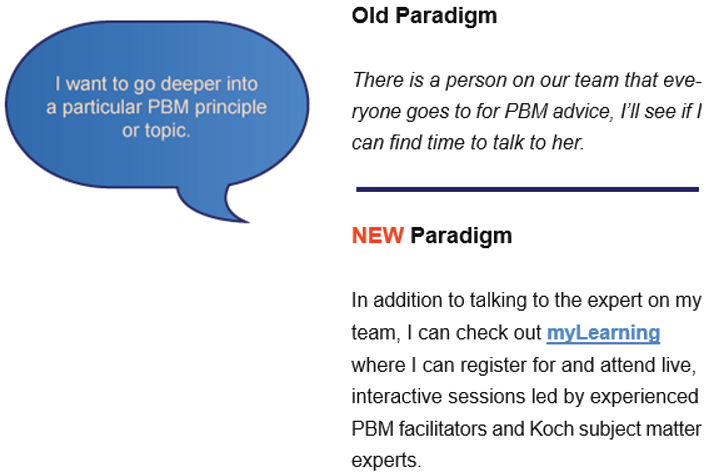 Supervisors partnering with each employee is a critical aspect of employee development. 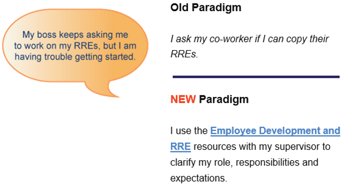 And now, here's one especially for supervisors: 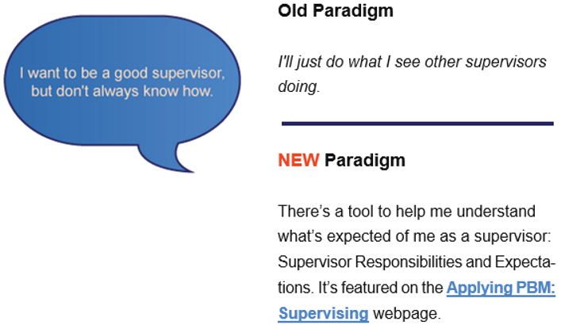 Ideas for Action: Even if you're not a supervisor, take a look at Supervisor Responsibilities and Expectations so you have a better sense of what is expected of your supervisor - and so you can provide meaniful feedback to your supervisor. Resources myLearning What is myLearning? myLearning is a learning delivery platform exclusively for organization employees. In myLearning, you can: Register for and attend live, interactive sessions led by experienced PBM facilitators and organization subject matter experts Register for and attend webinars View recordings of previous classes and webinars Access other self-guided learning experiences Benefits of facilitated sessions: Bring PBM concepts to life through discussion and examples Gain new perspectives from facilitators and fellow organization employees Practice and apply PBM using realistic scenarios Employee Development It’s More Than Performance Management There are several common or routine activities that are typically part of an annual cycle: Clarify your role, responsibilities and expectations On-going coaching and feedback Formal, annual feedback summary (performance review) Compensation review and discussion While many companies perform similar activities, organization’s emphasis and approach to these activities can be quite different. Instead of thinking of these simply as steps in a performance management cycle, we expect supervisors and employees to approach these as important aspects of development so everyone can realize their potential and maximize their contributions. Here is an overview of how various activities can aid in your development and career growth. Roles, Responsibilities and Expectations (RREs) Overview Dave Robertson, Co-CEO and Vice Chairman of Koch, Inc.: "Good supervisors or leaders need to connect their employees to the vision, the strategies and the priorities of the business...[RREs] should be developed between supervisors and employees...to help guide what the employee works on." What are RREs? Role, Responsibilities and Expectations help you and your supervisor work together to ensure your ROLE is an individualized bundle of responsibilities and expectations that fit your aptitudes and interests and help you make the greatest contribution relative to others. RESPONSIBILITIES define what you “own” or take care of based on comparative advantage. You are held accountable for your responsibilities. Examples include products, services, assets, activities, employees, projects, systems, and processes. EXPECTATIONS focus on the desired outcomes rather than on the activities that might be required to produce those outcomes. They should be clear, specific, and, whenever possible, measurable. A Principle-Based Approach It is important to understand the principles that inform our approach to RREs. Without this knowledge, misapplications often occur. Here are some common misapplications (RREs are NOT...) and principles we strive to apply instead. 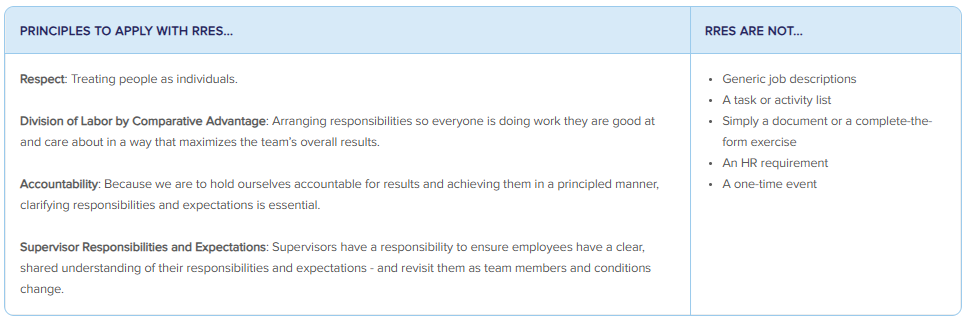 What Does Developing Your RREs Look Like? Fundamentally, developing RREs is a series of ongoing conversations with your supervisor. You will discuss and consider: Your business/team vision and associated strategies, goals and objectives. The nature of the work and what good looks like. Your gifts, skills, interests, development opportunities and possible stretch assignments. The gifts, skills and interests of other team members. While many people find it beneficial to summarize their RREs in a document, that’s not the primary goal. Creating a document without conversations and a shared understanding is wasteful. You might find the RRE Development Worksheet to be helpful as you work with your supervisor to define your responsibilities and expectations. 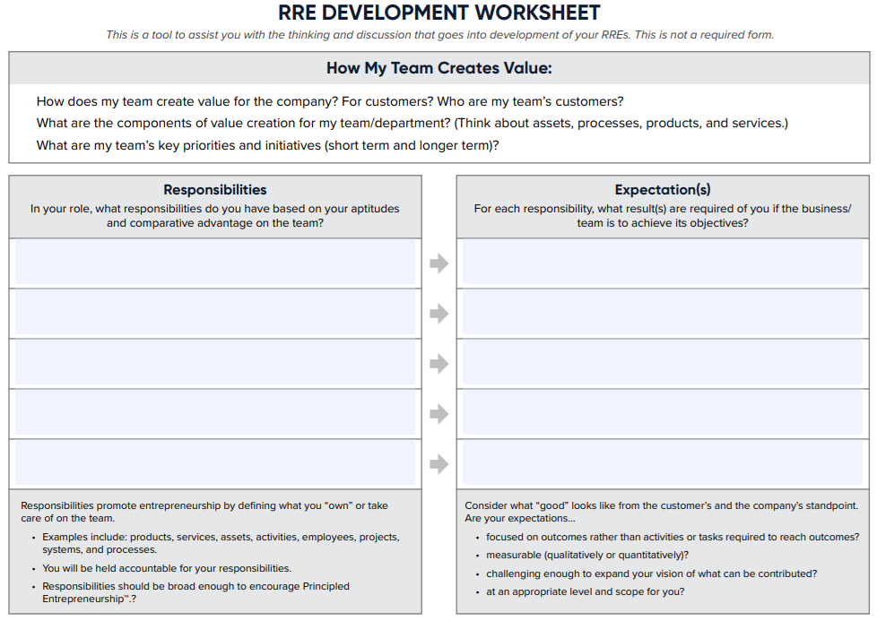 How Do You Use Your RREs? You should use your RREs to focus your efforts and increase your contribution by… Understanding how your work contributes to business results Prioritizing work and eliminating waste Leveraging your gifts and demonstrating entrepreneurship Exemplifying stewardship with the resources entrusted to you Examples: RRE Conversations Developing and using your RREs to focus and increase your contributions is an ongoing process – one that prompts you to adjust as conditions change. Here are a few examples of RRE conversations. Changes in Vision or Principles: Ari’s supervisor recently explained how their business strategy is changing from a regional support model to a national support model. In a one-on-one meeting, Ari describes how he sees his responsibilities changing – including dropping one that is no longer a priority. Ari’s supervisor agrees, and they spend the rest of the meeting exploring what good looks like. Someone Leaves the Team: Evelyn supervises the marketing team. An employee recently left the team, so Evelyn talks to each team member about how they might adjust their responsibilities. Each shares new responsibilities they want to take on and responsibilities they want to de-prioritize or give up completely. Evelyn takes time to consider everyone’s input and then works with each to adjust their RREs. Too Much Work: Remi’s work seems to come in waves – he's either slightly overwhelmed or completely overwhelmed. He talks to his supervisor about it, and she is surprised to learn how much Remi is doing when things are busy. Together they discuss different ways to smooth out the workload. While this is just the beginning of an ongoing conversation, Remi is pleased they’re working together to address it. Too Little Work: Fern gets done with her primary tasks quickly and is ready to do more, so she talks to her supervisor about taking on more responsibilities. They discuss various ideas, including a few stretch assignments, and decide to get back together next week after Fern considers what she is most interested in trying. How Are RREs Related to Other Aspects of Employee Development? RREs are one aspect of employee development—because each of us can develop through the work we are doing. All employee development activities have a purpose and are interrelated. Coaching and Feedback Overview "Everyone deserves to understand how they’re doing and how they can improve." Everyone Can Coach We’re all expected to seek and provide feedback – and even provide coaching when we can help others improve. Good coaches make the people around them better and more productive – and you don’t have to be a supervisor to provide coaching! 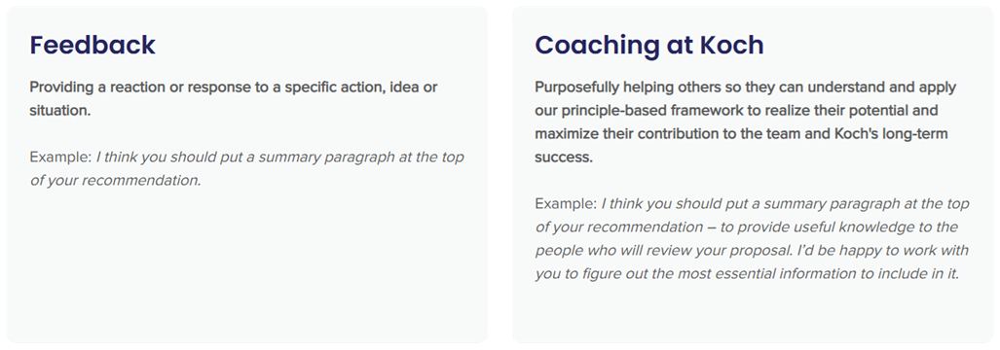 Charles Koch: You can coach your teammates, your supervisor, and others around you to help them improve. “And don’t forget that all of us have room to improve—even CEOs.” A Principle-Based Approach It is important to understand the principles that inform our approach to coaching. Without this knowledge, misapplications often occur. Here are some common misapplications (Coaching is NOT...) and principles we strive to apply instead. 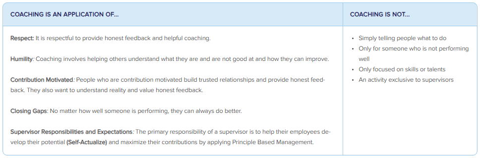 Examples: Offering Coaching While supervisors will do a lot of coaching, we are all expected to help one another improve. Here are some examples of what it might look like to coach... Your Supervisor: Rachel recently explained to her supervisor, Luis, that during team meetings he regularly offers ideas and suggestions before others have a chance. She uses specific examples to describe how his behavior often discourages others from offering challenge. Now, Luis is intentional about seeking ideas and challenge from others. A Co-Worker: Maria and Jake have worked together on the safety committee for about a year. Jake’s coaching has helped Maria sharpen her communication skills and improve her ability to provide direct, valuable feedback. Over time, she realizes that she really likes helping others develop, so she decides to pursue a supervisor role. Someone More Experienced: Ora is early in her career and Jing has been in sales for over 20 years. Ora notices that Jing is uncomfortable using their team’s new AI tool. She offers to help Jing learn to use it effectively. The two work together for several weeks until Jing is confident using the AI tool on her own. Someone You Don't Know Well: Reina needs to learn more about database management. She uses EverLearn to connect with Filip, who eagerly shares his knowledge and provides assistance as she learns. After a few coaching sessions, Reina gained enough knowledge to continue her learning using online resources. Filip offers to assist her if she has questions along the way. Demonstrating Courage: Uncomfortable Conversations People who are contribution motivated want to know if they are not doing well or if they are engaging in behavior that is problematic, yet people in the best position to provide that feedback and coaching often shy away from it. It is essential, especially for supervisors, to demonstrate courage and have uncomfortable or difficult coaching conversations. Here are a few tips: Assume people want the truth and can handle it. Address issues early because they typically get worse over time. Approach the conversation with a “I want you to be successful” attitude and view this as an investment in the person. Here is an example: Gianna joined the company a few months ago. She has a lot of valuable knowledge and experience that can really benefit the team, but the way she is engaging with co-workers and other teams is problematic. Her supervisor, Evan, schedules a meeting separate from their monthly one-on-one to address this with Gianna. He provides examples and clearly communicates the expectation for employees to live Our Values, especially Humility and Respect. Evan wants Gianna to be successful, so he invests in her development by coaching for behavior, not just skills. Examples: Receiving Coaching Responding productively to coaching is critical for your development. Being defensive, protectionist or resistant to change prevents you from growing and benefiting from coaching. When you are contribution motivated, however, you use principles to grow and improve. Humility One key aspect of reacting to coaching with humility is focusing on reality. For example, when you receive coaching and the coach needs more information, share it. This can sound like, “I’m flattered you think I can lead the team, but I really love doing hands-on engineering. I don’t think I’d like being the leader.” Another aspect of being coached with humility is reflecting, thinking about the actions you need to take and doing something with it. This might sound like, “In this upcoming meeting, can you pay attention to whether I’m speaking up enough? I’m trying to be more proactive about offering challenge.” Self-Actualize Coaching can help you discover, develop, and utilize your abilities to succeed by helping others improve their lives. This might sound like, "When you gave me feedback about how you saw me contributing, it really got me thinking. I do like project management, and I would like to pursue more opportunities there.” Changing Paradigms Coaching can help you identify when you need to change your paradigms – if you’re open to it. This might sound like, “Hmm, I do need to investigate how AI might impact how things are done in our industry” or “You’re right, I haven’t spent enough time staying connected to the most current processes. I’m going to explore more.” Transformation Coaching can highlight how you need to transform and guide you as you strive to transform. This can include: Setting goals and having a coach who holds you accountable for milestones along the way. Brainstorming ways to gain the skills and knowledge you need to transform. Pointing out the progress you’re making. How is Coaching Related to Other Aspects of Employee Development? In many ways, coaching is what ties together the various aspects of our approach to employee development. Things like training, formal feedback and stretch opportunities are more effective when combined with on-going coaching and feedback. Cara Chennault-Reid, Vice President – Human Resources, Koch: “You have to look at your entire team... and each individual is going to need something different.” Feedback Summaries What Are Feedback Summaries? For years, we referred to employee assessments as “performance reviews” – and you may still hear that term – but we now call them “feedback summaries” because they should be a summary of the coaching and feedback you have received about your performance and contributions throughout a given period (typically the past year). Your feedback summary involves a summary document and a discussion of your performance. Its purpose is to provide a reality-based view of how you’re doing, help you realize your potential and motivate you to maximize your contribution to the team and organization's long-term success. A Principle-Based Approach It is important to understand the principles that inform our approach to feedback summaries. Without this knowledge, misapplications often occur. Here are some common misapplications (Feedback Summaries are NOT...) and principles we strive to apply instead. 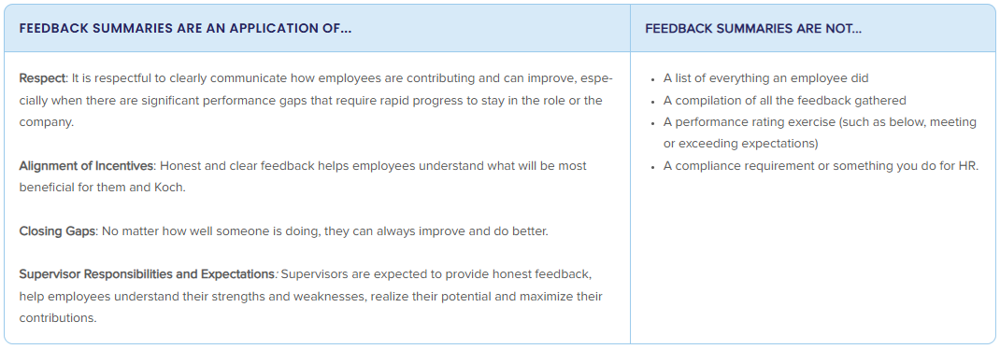 How Are Feedback Summaries Developed? Your supervisor will develop the written feedback summary and plan what to discuss with you by considering: Ongoing discussions with you Your contributions to your RRE, other results and culture Feedback from others (sometimes called 360-degree feedback) Your self-evaluation The written summary typically includes no more than a handful of your most significant contributions, 2-3 strengths and development areas and a forward-focused message about how you can improve contributions in the coming year(s). While a document is helpful, the feedback summary is about communication. The discussion is a chance to ask questions, connect to reality, explore what you could do differently in the future, and envision what you could do to better leverage your gifts to contribute more. Tips and Expectations At organization, everyone is expected to take the feedback summary process seriously. Below are tips and expectations for each essential element of effective feedback summaries. Gathering 360 Feedback (Supervisors) Feedback should be gathered and shared throughout the year. For the annual feedback summary, a supervisor solicits feedback from a small number of people who interact with the employee in different ways to gain a more complete view of the employee’s performance. Here are some things to keep in mind when you gather and analyze 360 feedback: 1) Seek feedback from those who can provide insight to help the employee develop and improve. 1.1) Be thoughtful about the questions you ask. Customize questions to match the reviewer’s interaction and relationship with the employee. 1.2) Ask about the “how” (virtue and talents) and the “what” (results). 2) When gathering feedback from internal partners, peers and direct reports, consider having a conversation (1-on-1 or in a group) rather than only asking for written feedback. There is no specific number of feedback providers required. 3) Key partners could be internal or external customers, suppliers or others the employee works with closely. Rather than sending external partners feedback forms to be completed, have conversations to learn how the employee (and we as an organization) are doing and what needs to improve. 4) Analyze the feedback; look for patterns and themes. Determine and summarize the appropriate message; do not provide a compilation of all feedback. 5) The Motivations and Behaviors tool can help you assess ways in which the employee is and is not contribution motivated. Providing Feedback for Co-Workers At organization, it is common to be asked by supervisors to provide feedback about the performance and contributions of their employees (your co-workers). Your feedback can help your co-workers discover their strengths and limitations, develop skills and apply them in ways that increase their contributions. Here are some things to keep in mind as you provide feedback: 1) Imagine you are receiving this feedback. What few things are most important to help this person? 2) Be clear, direct and honest. 3) Provide current examples or context so the feedback is meaningful and helpful. 4) Share how the person applied PBM to achieve results. Important note: Each of us is expected to provide helpful feedback to our co-workers (including our supervisor) on an ongoing basis, not just “at the end of the year.” Providing Your Self-Evaluation You can provide your self-evaluation to your supervisor in writing or through a conversation. Regardless of the approach you and your supervisor agree on, this is a formal opportunity for you to reflect and communicate with your supervisor about your contributions and experiences during the past performance period, as well as your thoughts on how you might contribute more or differently in the future. Here are some questions to consider as you prepare your self-evaluation: 1) What are my three most significant contributions? How did I apply PBM to achieve these results? 2) What is most fulfilling and least fulfilling in my role? 3) What area of development will help me realize my potential? 4) How would I change my role to better match my aptitudes and interests with the company’s needs? How Are Feedback Summaries Related to Other Aspects of Employee Development? Your feedback summary should help you reflect on your performance and how you’ve responded to coaching, understand how you’ve contributed to results and culture which affect your compensation, and spark ideas for how you might adjust your RREs. Compensation Our Compensation Objectives and Philosophy We strive to recognize and reward individuals in a way that motivates them to maximize their contribution to the long-term success of organization consistent with Our Values. One of the best ways to do this is to reward employees for their contribution to the company's results and value created, similar to how an entrepreneur is rewarded in the marketplace. We believe this approach helps us attract and retain contribution-motivated individuals and motivates them to be principled entrepreneurs. A Principle-Based Approach It is important to understand the principles that inform our approach to compensation. Without this knowledge, misapplications often occur. Here are some common misapplications (We Avoid...) and principles we strive to apply instead. 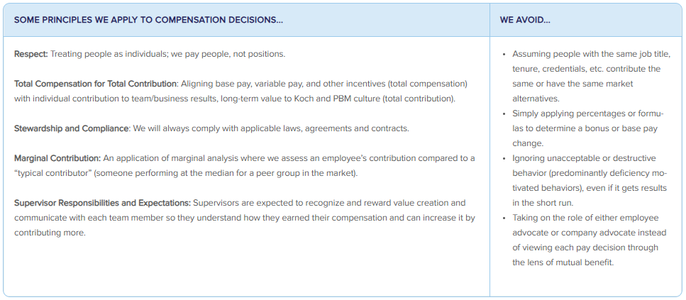 Examples: Communicating Compensation Supervisors should communicate with each team member so they can understand how they earned their compensation and how they can increase it by contributing more. Here are some examples. Rewarding Contributions “When you started working on Project Everest, we were struggling to partner with vendors and the commercial team. You took a risk to slow down the project and focus on building those relationships—and it paid off. In the last six months, we moved fast and found new ways of doing things because of cross-team collaboration. That wouldn’t have happened without you, which is why you are receiving a bonus of…” “As you know, we usually do compensation reviews a few months from now, but you’re contributing in a way that deserves more pay and is sustainable, so I didn’t want to wait. Here are some specific reasons...” Looking to the Future “Last week, we talked about what you did to earn your base pay increase. Today, I want to discuss what you can do going forward to contribute more—and earn more—while working toward your career goals. In the past, you’ve talked to me about possibly becoming a supervisor, so let’s talk about some possible opportunities…” “I know you were disappointed, but also not surprised, that you didn’t receive a pay increase. During your feedback summary discussion, we talked about the most important development area for you is to collaborate effectively to achieve mutually beneficial outcomes. Let’s discuss your ideas for what you can do differently going forward and how I can help or coach you...” How Does Compensation Relate to the Other Aspects of Employee Development? In many ways, the compensation discussions you have with your supervisor are an extension of coaching and feedback summary discussions. Compensation discussions can also lead to a better understanding of what is motivating and meaningful to you, which can lead to revisiting your RREs and identifying opportunities for growth. Effective compensation decisions start with you and your supervisor working together in all aspects of employee development. Other Activities It’s difficult to predict exactly what you might need or the opportunities that might arise for you to develop or contribute, so we stay open to various possibilities such as: training, workshops and conferences receiving guidance from others apprenticing short-term assignments When considering a developmental activity, work with your supervisor to ensure it aligns with our principles and benefits you and the company. Employee and Supervisor Responsibilities While you ultimately “own” your development and career, you are not alone. You and your supervisor have different but complementary responsibilities. 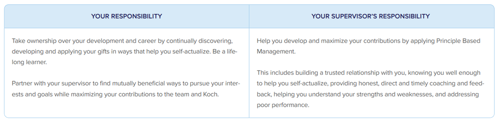 What if an Employee Is Struggling? Unfortunately, there are times when the employment relationship is not mutually beneficial. Employees should speak up and take action if they are struggling in their role or ready to explore other opportunities to contribute. If an employee is contribution motivated but not performing well, we may have them in the wrong role. In this case, the supervisor can help their team member identify other roles within organization where they might contribute more. If, for any reason, the employment relationship does not work out, we strive to part on good terms. A Principle-Based Approach At organization employee development and career navigation go hand in hand. Here are a few principles that inform our approach: Self-Actualize & Respect: We strive to respect each employee as an individual with a unique collection of experiences, aptitudes and interests. Realizing one’s potential is a deeply personal and ongoing journey of discovering aptitudes, developing skills and using them in productive ways. To help employees do this, it is important to honestly assess and communicate what a person does and doesn’t do well (even when it’s difficult). Contribution Motivated: We aim to hire, develop, and retain employees who define success by making a positive difference for others, are lifelong learners, seek feedback, demonstrate courage in learning their talents and what they are passionate about and seek responsibilities that align with how they can contribute the most. Partnerships & Mutual Benefit: Employees and their supervisors are expected to work together to find or create situations where each employee can continually develop while contributing more to the company — whether within their current role or in a different one. When an employment situation isn’t mutually beneficial, we strive to help employees figure out what’s next and, if that’s not at organization to part on good terms. Creative Destruction & Transformation: In a rapidly changing world, continual learning and development are critical. The pace of change, however, makes it impossible to know exactly what skills might be needed or what opportunities might emerge just a few years from now. We value an attitude of discovery and openness when considering what work might make sense for an employee (now and in the future) instead of being overly attached to a pre-defined career path or structured programs. 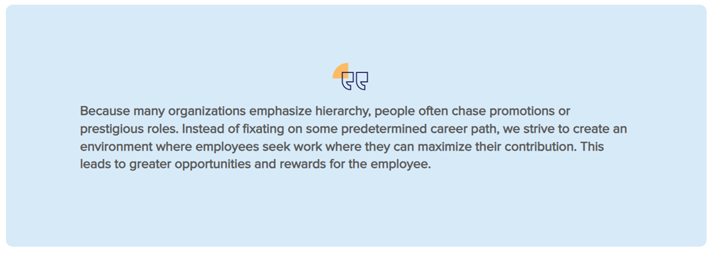 Shortcomings of Traditional Career Development Approaches At organization we take a different approach to employee and career development. Many common or traditional approaches such as company-defined career paths and highly structured development programs are inconsistent with our principles and ineffective over the long run because they: Tend to take a one-size-fits-all, bureaucratic approach that limits development as a discovery process. Often put more weight on credentials and technical skills than a person’s effect on culture and other people. Primarily use promotion/hierarchy to increase pay, decision rights and influence – such that climbing a career ladder is the only path to success. Lack flexibility needed to adapt to the rapid pace of change. 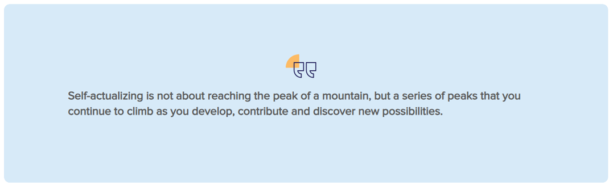 Supervising Supervisor Responsibilities and Expectations 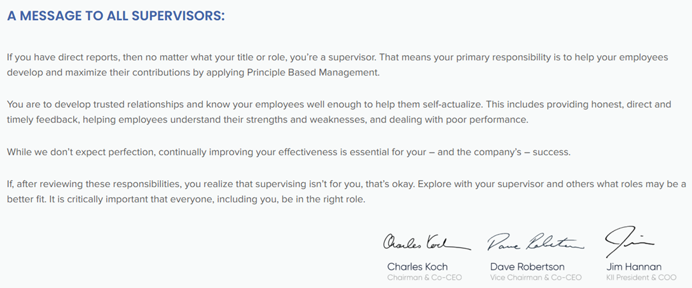 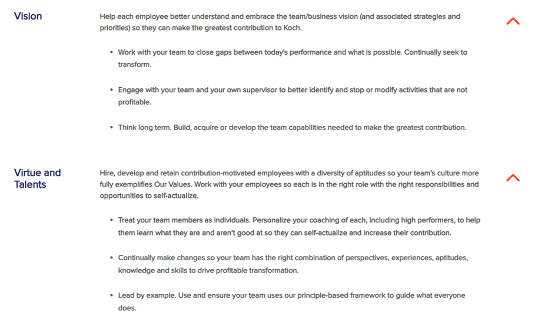 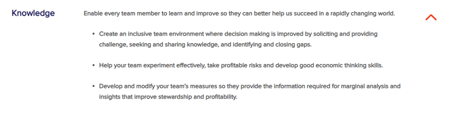 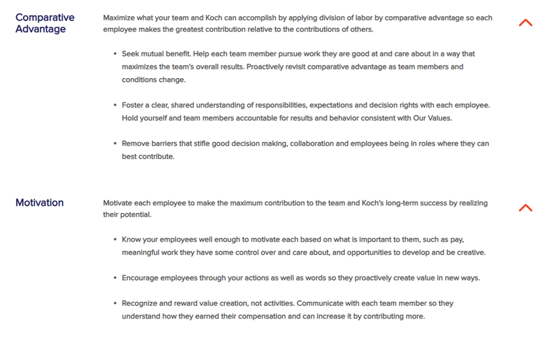 What makes our approach different? At organization supervisors contribute in a specific way: helping their employees develop and maximize their contribution. This responsibility is not an afterthought, it’s a supervisor’s primary responsibility! This differs from many companies, where becoming a supervisor and expanding the size of your team is the primary method of career and pay advancement. Simply put, our approach to supervising is to apply the five dimensions of Principle Based Management. |
| We're featuring ways to help you get the PBM resources you need, when you need them. 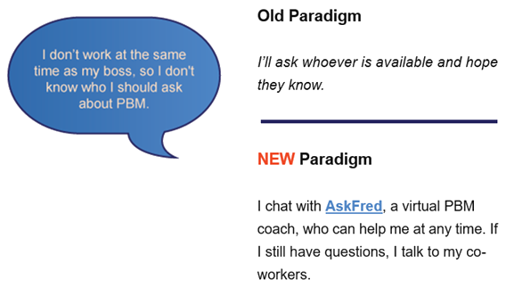 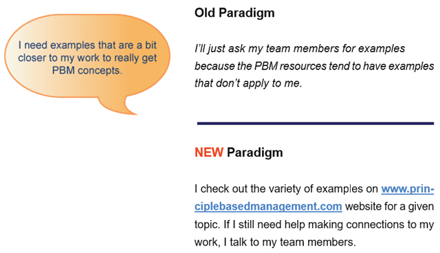 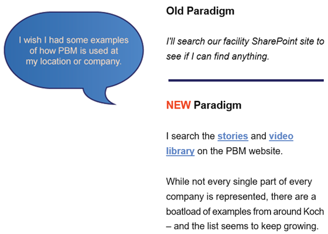 Ideas for Action: Give us some feedback! So often, paradigm changes occur because someone speaks up. Spend some time looking around www.principlebasedmanagement.com and tell us what we might be missing. What other resources could be helpful? Resources AskFred AskFred is equipped with knowledge of PBM. It answers questions, provides guidance and examples for how to apply PBM in your work, recommends (links to) additional PBM resources and encourages you to practice conversations using role play. Talk to AskFred as if you are talking to a PBM coach. This is different from using a web browser to search for things. It is interactive and conversational. Some Prompt Ideas To Get You Started Below are some examples of how you can start a conversation with AskFred. Apply PBM to Your Work I need to have a conversation with my supervisor/employee about RREs. Here is some context: ... I’m having difficulty on a project. Specifically, I’m seeing [details here]. Can you help me troubleshoot using the five dimensions? I need to make a decision and want help ensuring I’m applying PBM. Here is some background: ... Explore a Concept I’m new to Koch and keep hearing about comparative advantage - what is it? I just moved into a new role supervising 5 employees. Help me understand my supervisor role. I want to lead a team discussion on measures. Help me understand more about this topic to prepare for the discussion. Does “bottom-up” mean employees can do whatever they want? Role Play a Conversation When it makes sense, Fred will prompt you to practice a conversation using role play. However, you can ask to role play any time. Key prompts include: I’d like to role play a conversation I want to play the role of [employee, supervisor, project sponsor, etc.] The difficulty should be [easy, somewhat difficult, very difficult] End role play |